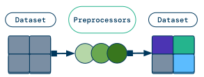

使用预处理器
Contents
使用预处理器#
Data preprocessing is a common technique for transforming raw data into features for a machine learning model. In general, you may want to apply the same preprocessing logic to your offline training data and online inference data.
This page covers preprocessors, which are a higher level API on top of existing Ray Data operations like map_batches,
targeted towards tabular and structured data use cases.
If you are working with tabular data, you should use Ray Data preprocessors. However, the recommended way to perform preprocessing for unstructured data is to use existing Ray Data operations instead of preprocessors.
Overview#
The Preprocessor class has four public methods:
fit(): Compute state information about aDataset(for example, the mean or standard deviation of a column) and save it to thePreprocessor. This information is used to performtransform(), and the method is typically called on a training dataset.transform(): Apply a transformation to aDataset. If thePreprocessoris stateful, thenfit()must be called first. This method is typically called on training, validation, and test datasets.transform_batch(): Apply a transformation to a singlebatchof data. This method is typically called on online or offline inference data.fit_transform(): Syntactic sugar for calling bothfit()andtransform()on aDataset.
To show these methods in action, walk through a basic example. First, set up two simple Ray Datasets.
import pandas as pd
import ray
from ray.data.preprocessors import MinMaxScaler
from ray.data.preprocessors.scaler import StandardScaler
# Generate two simple datasets.
dataset = ray.data.range(8)
dataset1, dataset2 = dataset.split(2)
print(dataset1.take())
# [{'id': 0}, {'id': 1}, {'id': 2}, {'id': 3}]
print(dataset2.take())
# [{'id': 4}, {'id': 5}, {'id': 6}, {'id': 7}]
Next, fit the Preprocessor on one Dataset, and then transform both Datasets with this fitted information.
# Fit the preprocessor on dataset1, and transform both dataset1 and dataset2.
preprocessor = MinMaxScaler(["id"])
dataset1_transformed = preprocessor.fit_transform(dataset1)
print(dataset1_transformed.take())
# [{'id': 0.0}, {'id': 0.3333333333333333}, {'id': 0.6666666666666666}, {'id': 1.0}]
dataset2_transformed = preprocessor.transform(dataset2)
print(dataset2_transformed.take())
# [{'id': 1.3333333333333333}, {'id': 1.6666666666666667}, {'id': 2.0}, {'id': 2.3333333333333335}]
Finally, call transform_batch on a single batch of data.
batch = pd.DataFrame({"id": list(range(8, 12))})
batch_transformed = preprocessor.transform_batch(batch)
print(batch_transformed)
# id
# 0 2.666667
# 1 3.000000
# 2 3.333333
# 3 3.666667
The most common way of using a preprocessor is by using it on a Ray Data dataset, which is then passed to a Ray Train Trainer. See also:
Ray Train’s data preprocessing and ingest section for PyTorch
Ray Train’s data preprocessing and ingest section for LightGBM/XGBoost
Types of preprocessors#
Built-in preprocessors#
Ray Data provides a handful of preprocessors out of the box.
Generic preprocessors
Combine numeric columns into a column of type |
|
Implements an ML preprocessing operation. |
|
Replace missing values with imputed values. |
Categorical encoders
Convert columns to |
|
Encode labels as integer targets. |
|
Multi-hot encode categorical data. |
|
One-hot encode categorical data. |
|
Encode values within columns as ordered integer values. |
Feature scalers
Scale each column by its absolute max value. |
|
Scale each column by its range. |
|
Scales each sample to have unit norm. |
|
Apply a power transform to make your data more normally distributed. |
|
Scale and translate each column using quantiles. |
|
Translate and scale each column by its mean and standard deviation, respectively. |
Utilities
Materialize and split the dataset into train and test subsets. |
Which preprocessor should you use?#
The type of preprocessor you use depends on what your data looks like. This section provides tips on handling common data formats.
Categorical data#
Most models expect numerical inputs. To represent your categorical data in a way your model can understand, encode categories using one of the preprocessors described below.
Categorical Data Type |
Example |
Preprocessor |
|---|---|---|
Labels |
|
|
Ordered categories |
|
|
Unordered categories |
|
|
Lists of categories |
|
Note
If you’re using LightGBM, you don’t need to encode your categorical data. Instead,
use Categorizer to convert your data to
pandas.CategoricalDtype.
Numerical data#
To ensure your models behaves properly, normalize your numerical data. Reference the table below to determine which preprocessor to use.
Data Property |
Preprocessor |
|---|---|
Your data is approximately normal |
|
Your data is sparse |
|
Your data contains many outliers |
|
Your data isn’t normal, but you need it to be |
|
You need unit-norm rows |
|
You aren’t sure what your data looks like |
Warning
These preprocessors operate on numeric columns. If your dataset contains columns of
type TensorDtype, you may need to
implement a custom preprocessor.
Additionally, if your model expects a tensor or ndarray, create a tensor using
Concatenator.
Tip
Built-in feature scalers like StandardScaler don’t
work on TensorDtype columns, so apply
Concatenator after feature scaling.
from ray.data.preprocessors import Concatenator, StandardScaler
# Generate a simple dataset.
dataset = ray.data.from_items([{"X": 1.0, "Y": 2.0}, {"X": 4.0, "Y": 0.0}])
print(dataset.take())
# [{'X': 1.0, 'Y': 2.0}, {'X': 4.0, 'Y': 0.0}]
scaler = StandardScaler(columns=["X", "Y"])
concatenator = Concatenator()
dataset_transformed = scaler.fit_transform(dataset)
dataset_transformed = concatenator.fit_transform(dataset_transformed)
print(dataset_transformed.take())
# [{'concat_out': array([-1., 1.])}, {'concat_out': array([ 1., -1.])}]
Filling in missing values#
If your dataset contains missing values, replace them with
SimpleImputer.
from ray.data.preprocessors import SimpleImputer
# Generate a simple dataset.
dataset = ray.data.from_items([{"id": 1.0}, {"id": None}, {"id": 3.0}])
print(dataset.take())
# [{'id': 1.0}, {'id': None}, {'id': 3.0}]
imputer = SimpleImputer(columns=["id"], strategy="mean")
dataset_transformed = imputer.fit_transform(dataset)
print(dataset_transformed.take())
# [{'id': 1.0}, {'id': 2.0}, {'id': 3.0}]
Chaining preprocessors#
If you need to apply more than one preprocessor, simply apply them in sequence on your dataset.
import ray
from ray.data.preprocessors import MinMaxScaler, SimpleImputer
# Generate one simple dataset.
dataset = ray.data.from_items(
[{"id": 0}, {"id": 1}, {"id": 2}, {"id": 3}, {"id": None}]
)
print(dataset.take())
# [{'id': 0}, {'id': 1}, {'id': 2}, {'id': 3}, {'id': None}]
preprocessor_1 = SimpleImputer(["id"])
preprocessor_2 = MinMaxScaler(["id"])
# Apply both preprocessors in sequence on the dataset.
dataset_transformed = preprocessor_1.fit_transform(dataset)
dataset_transformed = preprocessor_2.fit_transform(dataset_transformed)
print(dataset_transformed.take())
# [{'id': 0.0}, {'id': 0.3333333333333333}, {'id': 0.6666666666666666}, {'id': 1.0}, {'id': 0.5}]
Implementing custom preprocessors#
If you want to implement a custom preprocessor that needs to be fit, extend the
Preprocessor base class.
from typing import Dict
import ray
from pandas import DataFrame
from ray.data.preprocessor import Preprocessor
from ray.data import Dataset
from ray.data.aggregate import Max
class CustomPreprocessor(Preprocessor):
def _fit(self, dataset: Dataset) -> Preprocessor:
self.stats_ = dataset.aggregate(Max("id"))
def _transform_pandas(self, df: DataFrame) -> DataFrame:
return df * self.stats_["max(id)"]
# Generate a simple dataset.
dataset = ray.data.range(4)
print(dataset.take())
# [{'id': 0}, {'id': 1}, {'id': 2}, {'id': 3}]
# Create a stateful preprocessor that finds the max id and scales each id by it.
preprocessor = CustomPreprocessor()
dataset_transformed = preprocessor.fit_transform(dataset)
print(dataset_transformed.take())
# [{'id': 0}, {'id': 3}, {'id': 6}, {'id': 9}]
If your preprocessor doesn’t need to be fit, use map_batches() to directly transform your dataset. For more details, see Transforming Data.